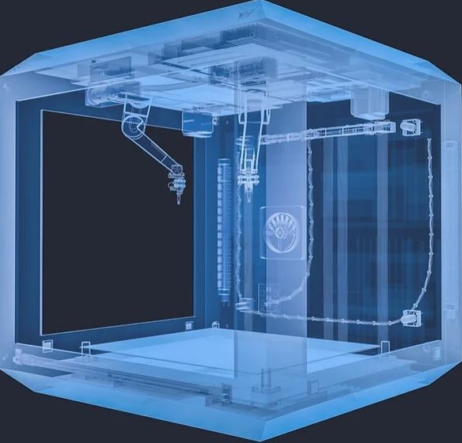

HAKKIMIZDA
. Türkiye’de bilimsel araştırma ve geliştirme alanında katma değer üreten bir kurum olmak amacıyla Şubat 2020 tarihinde İstanbul Üniversitesi Cerrahpaşa Avcılar Yerleşkesi Teknokent Binasında çalışmalarına başlamıştır.
. Sağlık başta olmak üzere bilgisayar bilimleri (yazılım ve donanım) ve elektronik üzerine proje üretip araştırma ve geliştirme çalışmalarını sürdürmektedir. Araştırma ve geliştirmenin yanı sıra endüstriye bilimsel akreditasyon ve proje yönetimi ve oluşturulması konusunda da danışmanlık yapmaktadır.
